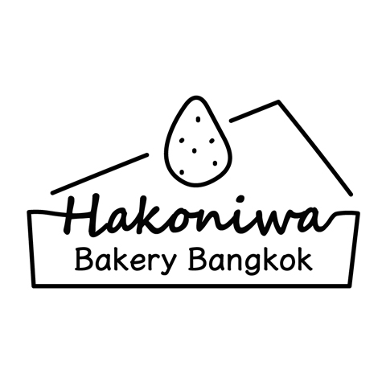

HAKONIWA Bakery Bangkok
概要
HAKONIWA Bakery Bangkokはタイの首都バンコクを拠点に販売するケーキ屋さんのブランディングを手がけました。 暑い地域ではケーキを持ち運びする際に崩れやすく溶けやすいことを踏まえ、持ち運びやすく食べやすくする為容器に入れること、 それを日本の箱庭のようなイメージでケーキをブランディングしたいというお客さまのコンセプトがありました。 一目でケーキ屋と分かるようなシンプルで親しみやすいロゴマークになるようにデザインしました。
制作プロセス（情報整理・ナレッジ設計）
依頼者
- HAKONIWA Bakery Bangkok
担当
- <アートディレクション・ブランディング・ロゴデザイン/li>
① ヒアリング内容の整理
- 要望：◯◯
- ターゲット：◯◯
- 目的：◯◯
② 情報の分類・構造化
ヒアリング内容を以下の3つに分類し、方向性を決定しました。
- ブランドイメージ
- ユーザー導線
- 視覚表現の方向性
③ デザインの方向性（3案）
- A案：◯◯
- B案：◯◯
- C案：◯◯
④ 最終デザインの決定理由
最終的にA案を採用した理由は◯◯のためです。
Before / After
